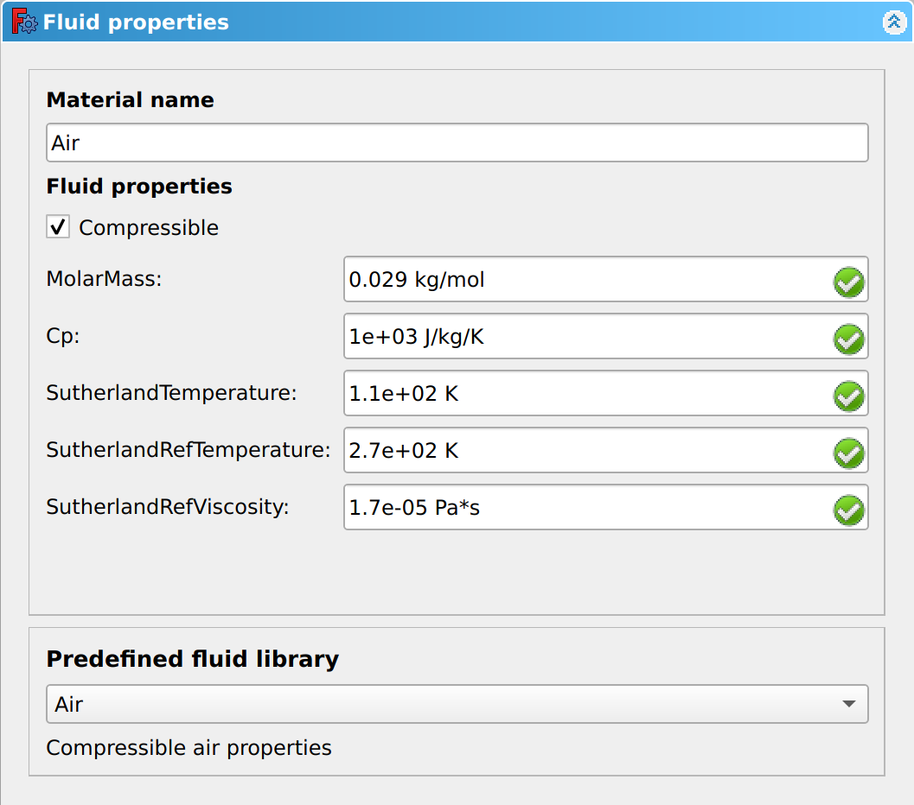

CfdOF Fluid Properties
|
|
| Menu location |
|---|
| CfdOF → Add Fluid Properties |
| Workbenches |
| CfdOF |
| Default shortcut |
| None |
| Introduced in version |
| - |
| See also |
| None |
Description
The Fluid Properties dialogue panel is used to input the properties of the fluids to be used in the simulation. These can be manually imputed, or selected from a fluid library. When a Single Phase Physics Model has been selected, only one fluid can be added. In the case of a Multiphase Physics Model, multiple fluids may be added.
Usage
A Fluid Property is added to the tree when the Analysis Container is created.
The Fluid Properties button and Fluid Properties menu item behave differently for Single Phase and Multiphase simulations.
Single Phase
There are several ways to open the Fluid Properties dialogue panel that was created in the Analysis Container :
- Press the
 Fluid Properties button.
Fluid Properties button. - Select the CfdOF → Add Fluid_Properties option from the menu.
- Click on the Fluid Properties in the tree.
- Press the
Multiphase
There are several ways to add additional Fluid Properties to the Analysis Container:
- Press the Fluid Properties button.
- Select the CfdOF → Add Fluid_Properties option from the menu.
- Press the
To open the Fluid Properties dialogue panel for the fluid you wish to edit:
- Click on the [Material name] in the tree.
- Click on the
Options
The options selected in the Physics Model dictate the inputs required in the Fluid Properties dialogue panel. The image below shows the Fluid Properties dialogue panel for an non-isothermal simulation.
{kind=link}

Material name
The input box allows the fluid name to be entered. A fluid selected from the Predefined fluid library will automatically populate this input box, but can be overridden. The name entered will appear in the Analysis Container tree.
Fluid properties
- Isothermal fluids
- The physical properties of an Isothermal fluid will not change during the simulation and therefore only data for a single temperature point is required.
- Input box Cp.
- Specific Heat Capacity at constant pressure.
- This is required when simulating non-isothermal, single phase fluid, under Steady State. Cp is the amount of energy required to raise the temperature of 1 kg of fluid by one degree Kelvin, in an isobaric process. As this is under Steady State, only a single data point is required at the conditions that the simulation is occurring.
- Input box Density.
- Mass per unit of volume of a material/fluid.
- Input box DynamicViscosity.
- A measure of a fluids resistance to deformation at a given rate and sometimes referred to as the absolute viscosity. The dynamic viscosity divided by the fluid's density gives the kinematic viscosity.
- Non-isothermal
- Optionally select Compressible.
- When a non-isothermal simulation is selected, in the Physics Model, the Compressible checkbox becomes visible. If unchecked, incompressible fluids can be simulated within a compressible solver, if the compressibility plays no significant role.
- Input box Molar Mass.
- The Molar Mass or Molecular Weight of the fluid.
- Polynomials
- Temperature-polynomials are used when simulating non-isothermal, incompressible fluids. The simulation occurs over a temperature range and the fluid property data must be determined over the range.
- The Polynomial provides a means of inputting coefficients for a temperature-polynomial, in the format:
- Temperature-polynomial = a + b × T + c × T2 + d × T 3
- where a, b, c and d are coefficients and T is Temperature. The polynomials will accept up to 8 coefficients. Enter each coefficient, separated by a space, for the temperature-polynomial, starting with the constant followed by the higher powers.
- e.g. Cp = 9850.69 -48.6714xT +0.13736T2 -0.000127063xT3
- would be entered as:
- 9850.69 -48.6714 0.13736 -0.000127063
- The Polynomial provides a means of inputting coefficients for a temperature-polynomial, in the format:
- Input box CpPolynomial.
- Temperature-polynomial for Specific Heat Capacity at constant pressure.
- Input box DensityPolynomial.
- Temperature-polynomial for Density.
- Input box DynamicViscosityPolynomial.
- Temperature-polynomial for Dynamic Viscosity.
- Input box ThermalConductivityPolynomial.
- Temperature-polynomial for Thermal Conductivity.
- Sutherland
- The Sutherland formula is used when simulating non-isothermal, compressible fluids. It is used for approximating the viscosity of gases, at different temperatures. It is used for single-component gases at low pressure, however can also be used for Air, as the main components of Nitrogen and Oxygen have very similar properties.
- Input box SutherlandRefTemperature.
- The temperature, T0, at which the SutherlandRefViscosity was determined.
- Input box SutherlandRefViscosity.
- The empirical reference viscosity, μ0, determined at the SutherlandRefTemperature.
- Input box SutherlandTemperature.
- Sometimes referred to as the Sutherland constant, S, is an effective temperature, which is characteristic of the gas.
Predefined fluid library
- Drop-down box
- The fluid properties for a number of components exist within the Predefined fluid library. Selecting a fluid from the drop-down, will automatically populate the Fluid properties input boxes above
- Reference data
- Below the drop-down, the reference conditions for the fluid selected are given. e.g. for incompressible Seawater it states "Sea water (30%) 20 Degrees Celsius 1 atm".
Notes
- The input boxes and options available in the Fluid Properties dialogue panel are dependent on the options selected in the Physics Model dialogue panel. To assist with workflow, we recommend that you complete the Physics Model dialogue panel before completing this dialogue panel.
- Menu: Analysis Container, Physics Model, Fluid Properties, Initialise Flow Fields, CFD Solver, CFD Mesh, Mesh Refinement, Interface Dynamic Refinement & Shockwave Dynamic Refinement, Fluid Boundary, Initialisation Zones, Porous Zone, Reporting Function, Scalar Transport Function
- Information:
- Tutorials:
- Getting started
- Installation: Download, Windows, Linux, Mac, Additional components, Docker, AppImage, Ubuntu Snap
- Basics: About FreeCAD, Interface, Mouse navigation, Selection methods, Object name, Preferences, Workbenches, Document structure, Properties, Help FreeCAD, Donate
- Help: Tutorials, Video tutorials
- Workbenches: Std Base, Assembly, BIM, CAM, Draft, FEM, Inspection, Material, Mesh, OpenSCAD, Part, PartDesign, Points, Reverse Engineering, Robot, Sketcher, Spreadsheet, Surface, TechDraw, Test Framework
- Hubs: User hub, Power users hub, Developer hub